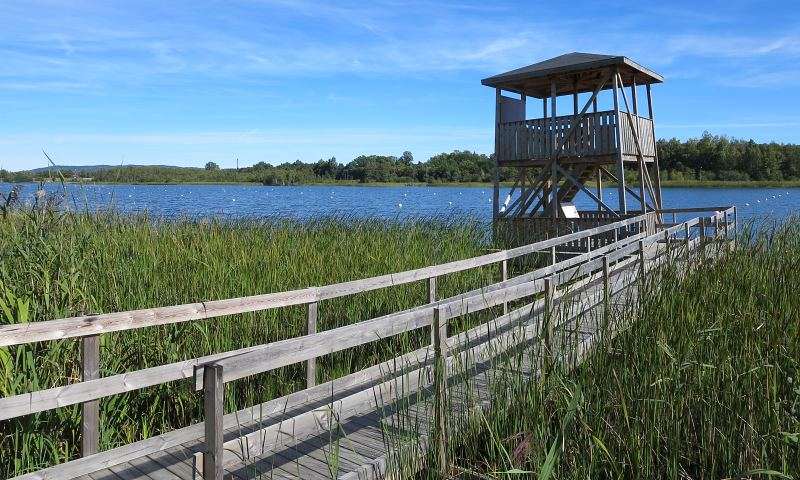
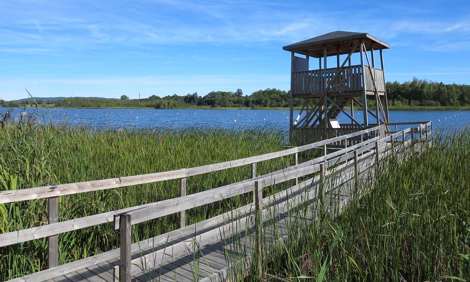

Here, in Jönköping there are a lot of things to do. This city is famous thank three lovely lakes. In summer it's good opportunity to swim. Natural environment in Jönköping is beautiful overall so you must visit Stadsparken or Roselund Rosarium.
 

In Jönköping you have a plenty of opportunities to go out so don't worry. It doesn't matter if you are "nature lover" or "animal party". Without doubt you will find some interesting activities in this amazing city. As I said before, you can explore the lush nature. Parks, gardens, lakes. It's big part of Jönköping. If you want to go somewhere on weekend evening you should visit some great pubs, restaurants and night clubs in the centrum.
If you are foodie Jönköping is great place for you. There are a lot of restaurants with cuisine from all world. It's pretty easy to find some street food like pizza, burgers and falafel of course. But it's not difficult to find sushi bars, seafood and Thai, Italian or Scandinavian restaurants as well.